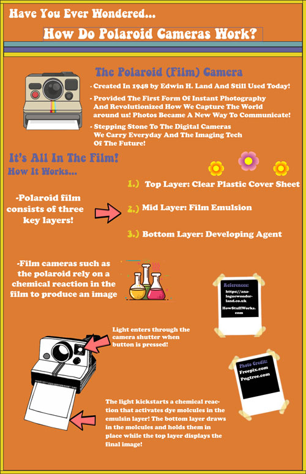

Infographics | |
| Home || Print Bookmark (Lithography) || Infographics || Videography | |
|  |
The Project PurposeThe purpose of the project was for students to investigate a communication technology through researching its orgin, operating principle, uses, impacts and possible future. The collected information was to be synthesized into a visual display that represents how the selected communication technology fits into the communication technology model and enables an understanding of the technology's operating principle. ResearchThe first step that I needed to take in the creation of my infographic was to do my research and to understand how my communication technology worked inside and out. In order to do this I looked at a variety of websites and pulled information from two of them primarily. The first website that I found to be useful was analoguewonderland.co.uk and the other was HowStuffWorks.com. These websites are what gave me an understanding of how my technology (the polaroid camera) works and allowed me to think of how I want to develop my visual going forward. In addition to finding information about the technology itself I had to find a website that had images that were public domain and ok to use for educational purposes, in the end I found two websites that fit that criteria. Those websites were Freepix.com and Pngtree.com, many of the images on these sites were free to use for personal and educational purposes as long as the websites were credited somewhere within the project the image was being used. My Infographic DesignAfter gathering my information the next step was to actually create and put together my infographic design and devise a way to effectively and aesthetically arrange my information. The program that I used to create my infographic was adobe InDesign which was a learning process, in order to aid with some of the difficulties I was having working with InDesign I also utilized adobe Illustrator. In Illustrator I seperated some aspects of my images and repositioned them in InDesign. Using this process alongside text boxes I was able to arrange my finished infographic. |
| Home || Print Bookmark (Lithography) || Infographics || Videography | |
|
©2023 Lily M. Hubler |
|